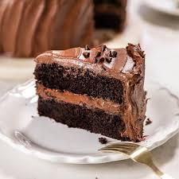

Cake

Description
A light and fluffy vanilla cake that's perfectly moist and soft.
This cake has a tender crumb and a rich vanilla flavor, making it a versatile base for any frosting or topping. Whether it's for a birthday, celebration, or a simple dessert, this classic vanilla cake will never disappoint.
Ingredients:
- 2 1/2 cups (310g) all-purpose flour
- 2 1/2 tsp baking powder
- 1/2 tsp salt
- 3/4 cup (170g) butter, softened
- 2 cups (400g) sugar
- 4 eggs
- 2 tsp vanilla extract
- 1 cup (240ml) milk
Steps:
- Preheat your oven to 350°F (175°C) and grease two 8-inch round cake pans.
- Mix flour, baking powder, and salt in a bowl.
- Cream butter and sugar until light and fluffy.
- Add eggs one at a time, then vanilla.
- Alternate adding the dry ingredients and milk to the wet mixture, starting and ending with the dry.
- Pour batter into the pans and smooth the tops.
- Bake for 25-30 minutes or until a toothpick comes out clean.
- Let cool completely before frosting.